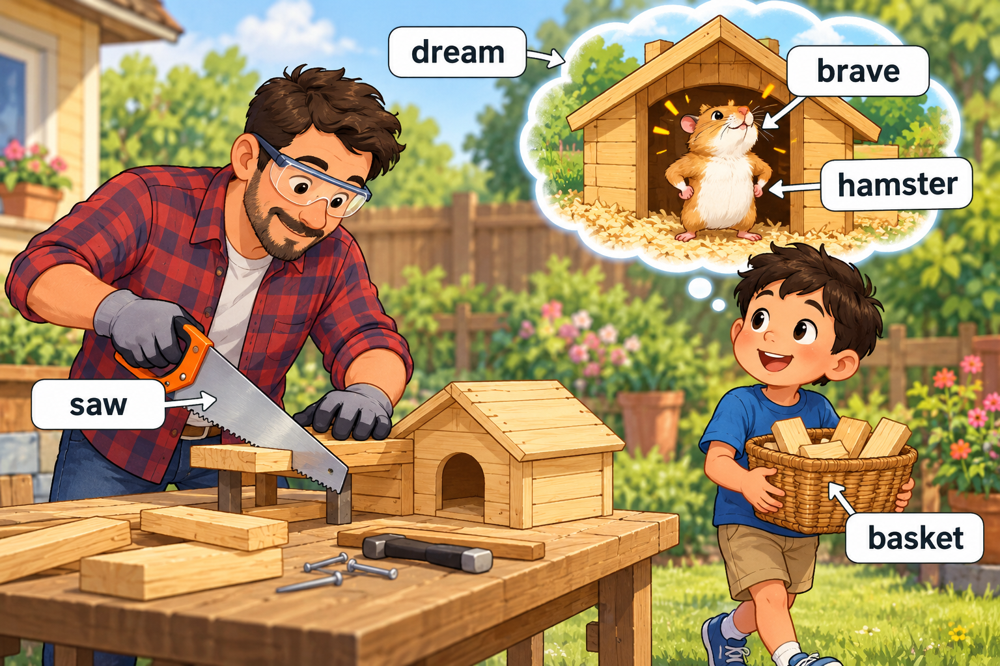
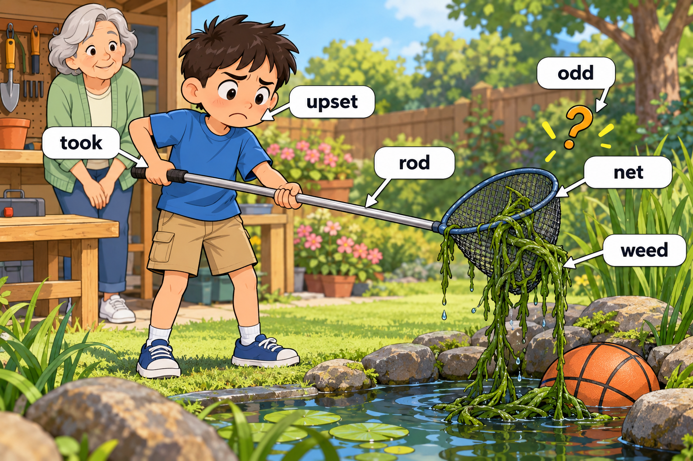

STORY-003 · 第 3 周（推定） · Day 15–20 · 18 个目标词
给仓鼠的小房子
A Little House for a Hamster
每次练习约 5–8 个词，先读英文，再查看中文解释，最后遮住图片复述。点击图片可查看原图。
Scene 1 — A dream house
Day 15、Day 20

Miller had a dream about a brave hamster in a tiny house.
In the morning, Dad used a saw to build that house.
Miller carried the pieces in a basket.
dream, brave, hamster, saw, basket.
查看中文解释
Miller 梦见一只勇敢的仓鼠住在小房子里。早上，爸爸用锯子做这间房子，Miller 用篮子搬木块。
Scene 2 — A stuck basketball
Day 16

During a break, Miller tried to shoot a basketball into the hoop.
The ball got stuck under the garden workbench.
He rang Grandma to tell her about it.
shoot, stuck, rang.
查看中文解释
休息时，Miller 想投篮，但球卡在花园的工作台下面。他给奶奶打了电话，告诉她这件事。
Scene 3 — An odd little problem
Day 17、Day 18

Miller took a long rod and a net to fetch the ball.
A long weed was tangled in the net, and Miller felt upset.
“That is odd!” he said.
took, rod, net, weed, upset, odd.
查看中文解释
Miller 拿来一根长竿和一个网，想取出篮球。网里缠着一株长长的杂草，让他有点心烦。他说：“真奇怪！”
Scene 4 — Home at last
Day 19、Day 20

Just then, the hamster began to run toward a hole in the fence.
Miller shook the weed loose and saved the hamster with the net.
They put its real little house inside the cage.
began, saved, real, cage.
查看中文解释
这时，仓鼠开始向栅栏上的洞跑去。Miller 抖掉网里的杂草，用网把仓鼠救了回来。最后，他们把真正做好的小房子放进笼子里。
复述练习
- What got stuck?（用 The ball got stuck 回答。）
- How did Miller save the hamster?（说出 net，并复述救回仓鼠的动作。）
- What was in the cage?（区分梦里的房子和 real little house。）
选两个目标词造新句。首次练习后第 1、3、7、14 天复习。
开始 Memory Exam → · 可切换到全部五篇故事，或按 Day 练习。
家长词义备注
- saw：这里是工具“锯子”；dream：这里是睡觉时做的梦。
- shoot a basketball：投篮；shoot 在这里不用射击的意思。
- rang Grandma：给奶奶打了电话；和 the phone rang（电话铃响了）区分。
- saved：这里是救回仓鼠；不是保存文件或节省钱。词表中的 Saved 在句中写作 saved。
- upset：故事采用“心烦；难过”，将照片中的中文重复字整理为自然表达。
← 返回单词本总览